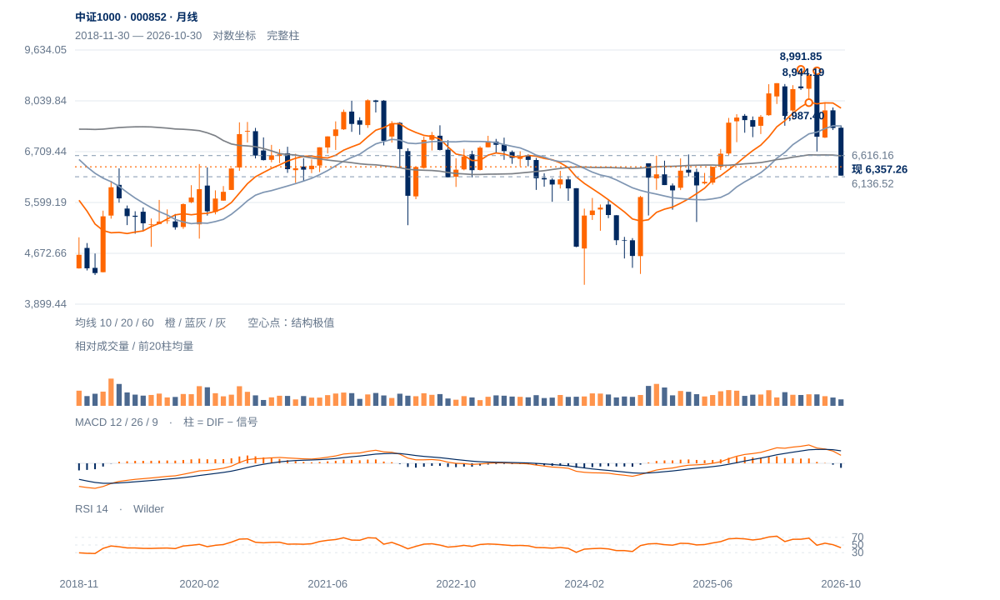

波段方向转弱
收盘波段已出现新的向下跟进：八日反弹的一半以上涨幅在两日内回吐，当前优先检验6400反抽能否收回及6137—6200承接。
收盘波段已出现新的向下跟进：八日反弹的一半以上涨幅在两日内回吐，当前优先检验6400反抽能否收回及6137—6200承接。
未来2—6周优先考虑6137—6616低位区间，短线快速反向波支持先试下沿。收回6400、6530后，仍需通过6701原两日条件才能提高修复级别。
未来1—3个月以长线升波回撤后的筑底观察为主。连续两周收低6137将增加向6017回撤参照靠拢的风险；重新站稳6616并形成较高周谷，才支持修复向旧6714以上延伸。

展开图表 ↗2024低点4177.94至今年5月8991.85的上涨已回吐54.73%。6584.90半幅回撤、2024高点6616.16及60月均线6609.49集中在上方，构成6600附近的长期角色转换区；现价仍在其下。前期高位形态已经完成一段下跌，不能继续拿旧测幅作为尚未兑现的未来空间。
5月14日8991.85与7月1日8944.19形成两次大高区，中谷为6月8日7987.40。算术高度1004.45，对应6982.94：7月13日首次日收下破中谷，7月20日已触及测幅；若采用连续两周收盘过滤，要到7月24日才确认，届时目标早已到达。该过程只说明历史形态进展，不能列作过滤后新增预测成绩。
5—7月双顶已下破，原算术测幅6982.94于7月20日到达。当前争点转为6137承接与6585—6616旧支撑转阻力。
10月30日至11月11日收盘波上涨8.25%，用时8日；随后两日回落4.68%，按点差约回吐前段61%。反向推进显著更快。
回撤段日均量约为反弹段0.96倍，接近原有参与水平，却产生较快下行；因此不能用“回调量稍低”推导卖压已经耗尽。
13日满足既定1.5ATR收盘反向门槛，11日收盘极点的波段终点在13日才确认；同时收6357.26，低于6400近端观察位。
先收回6400并保持，再检验6530；原6701两日条件不变。
6137结构底线失守，撤销本轮旧底保持解释。
6137未破，20日OBV仍微正；旧双顶跌幅已经充分展开，追随旧形态继续外推可能高估剩余空间。
| 周期 | 最后完整柱 | 图示柱数 | RSI14 | ATR14 | MACD柱 |
|---|---|---|---|---|---|
| 日线 | 2026-11-13 | 185 | 39.8075 | 201.6842 | 37.97485 |
| 周线 | 2026-11-13 | 156 | 34.74345 | 452.44534 | -128.55416 |
| 月线 | 2026-10-30 | 96 | 42.87144 | 839.62014 | -160.04532 |
国内完整周线至11月13日；11月月线进行中。指数价格不复权，长期历史按实际可用起点。